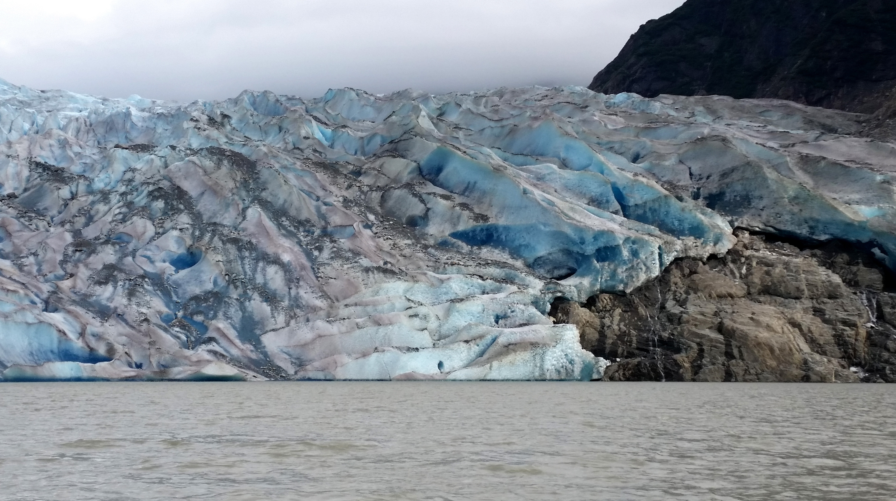
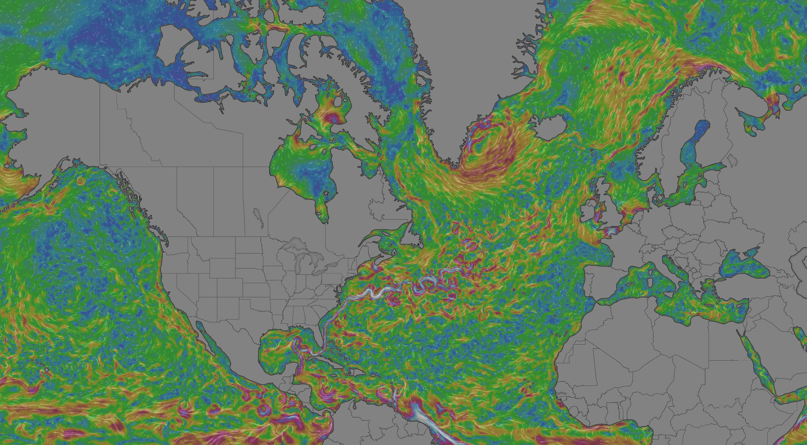
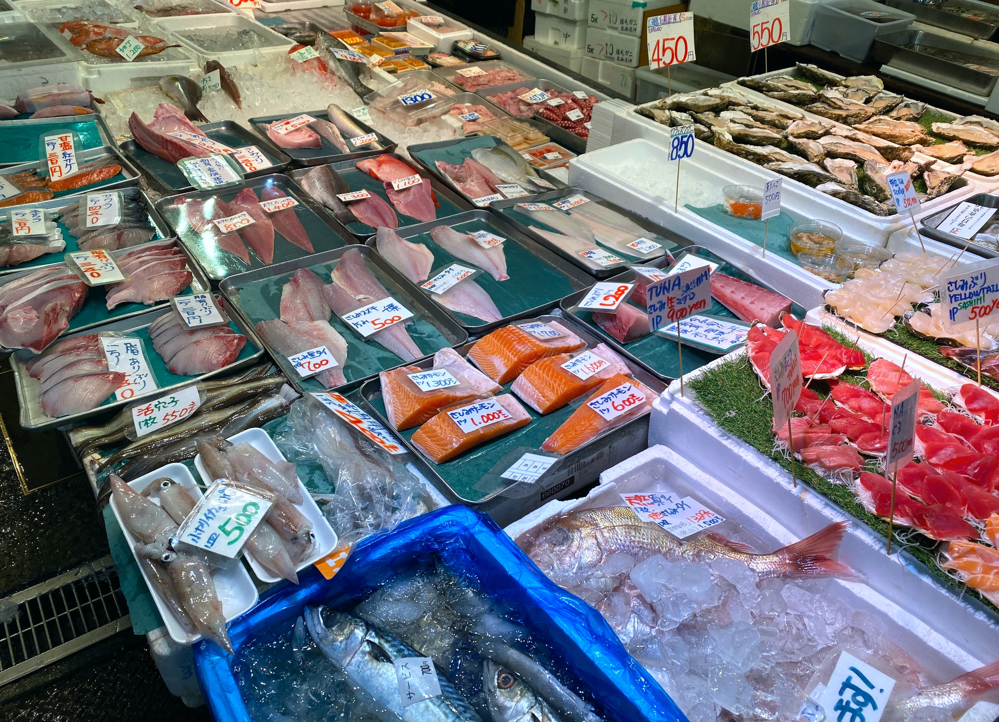

Risk provides the underpinning for transparent and consistent decision making for marine resource management. We are currently in times where climate and ecosystem changes are occuring on a rate rapid enough to affect the medium to long term viability of sustainable management decisions. It is becoming no longer acceptable to provide advice for management of human activities in the marine environment assuming status quo background conditions in the environment. A risk-based approach to providing advice and management that utilises modern analytical tools appropriate to each data and knowledge situation coupled with guiding objectives based management and tools such as risk equivalency can provide a way to navigate an approach to advice provision and management of marine resources currently.
Risk and risk equivalence
Risk
Risk is the chance that something undesired will happen. With objectives based fishery management, risk is usually stated as the probability that a stock biomass objective will not be met or the chance that a stock’s biomass will fall below a poor health objective such as the limit reference point. Risk should be understood more generally than this though. For instance governments manage many different kinds of activities in the marine environment such as marine infrastructure, oil and gas development, shipping and tourism. Management of these activities is a form or risk management which is in some classes clear but it other cases is may not appear as such.
Risk-based advice
Because all management decisions about natural resource exploitation are risk-based decisions, it is logical that science provides appropriate risk based advice and analyses to enable managers to make informed risk based decisions. Risk management involves the understanding of tradeoffs between harm to resources and economic and social benefits that come from resource exploitation. Risk based advice therefore is most useful when it is provided within the constraints of legislative and policy based risk frameworks. The precautionary approach to fisheries is one such framework which lays out the risk landscape for managing fish stocks in many jurisdictions. Because a clearly defined risk framework does not exist to orient risk-based advice and decisions for management of many marine activities, it is important for science to provide a range of risk options with potential consequences of different management actions and highlight options which entail an equivalent risk consistent with previous management actions.
Risk equivalence
Risk equivalency is a term to denote a management decision consistent with previous level of risk assumed given uncertainties. Thus risk equivalency can be broadly thought of as consistency in management. For example if a manager allowed a 5% chance of falling below a limit reference point in the next year for a decision on directed fishery removal, then we can assume that this 5% risk tolerance is guiding level of risk if we considered the impact of a marine heat-wave mortality event on the stock. That is, a risk equivalent management action that would consider a marine heat wave mortality event would need to reduce directled fishery removals to compensate the mortality loss owing to the heat-wave thus maintaining the 5% risk equivalence.
Dr. Marie-Julie Roux explains risk and risk-equivalency in risk based advice and decision making in this 6 minute presentation.
Conditioning Advice
We call the process of accounting for climate and ecosystem changes conditioning advice. Advice is also regularly conditioned, however, along the data and knowledge continuum in jurisdictions such as Australia, ICES and the USA with buffers.
Buffers and conditioning factors are used to change the exploitation advice such that it remains sustainable while still providing fishing opportunities when possible
Buffering advice for data availability
Conditioning advice to climate and ecosystem changes
Analytical tools
We condition advice using a range of methods from qualitative scoring methods to fully integrated quantitative methods to account for uncertainty
In the end, it should lead to this:

Publications
Several publications have been produced in recent years describing how to alter fisheries advice in relation to data availability and ecological or environmental changes
Duplisea, D.E., Roux, M.J., Hunter, K.L. and Rice, J., 2021. Fish harvesting advice under climate change: A risk-equivalent empirical approach. PloS one, 16(2), p.e0239503.
Duplisea, DE, Roux, M-J, Hunter, KL, and Rice, J. 2020. Resource management under climate change: a risk-based strategy to develop climate-informed science advice. DFO Can. Sci. Advis. Sec. Res. Doc. 2019/044. v + 45 p.
About Us
We are four scientists working for Canada’s Federal Department of Fisheries and Oceans whose mandate is to provide science advice to inform decision making in the department. Most of our work is in the area of fisheries and providing sustainable exploitation advice for stocks experiencing climate and ecosystem changes. We also work in other areas such as the development of marine protected area networks and fish habitat protection. Since 2017, we have been working on objectives based management and risk evaluations to inform managers of the consequences of different decisions in light of climate and ecosystem changes.
Our group came together by the need to consider climate change in advice consists of:
• Dr. Daniel Duplisea (Mont-Joli, Québec. daniel.duplisea@dfo-mpo.gc.ca)
• Dr. Karen Hunter (Nanaimo, British Columbia. karen.hunter@dfo-mpo.gc.ca)
• Dr. Jake Rice (Ottawa, Ontario. jake.rice@dfo-mpo.gc.ca)
• Dr. Marie-Julie Roux (Mont-Joli, Québec. marie-julie.roux@dfo-mpo.gc.ca)
We also work closely with scientists and managers throughout the Department.





